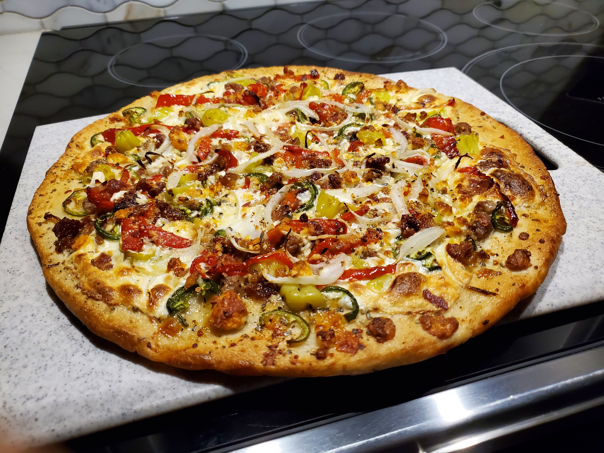

Matthew-Style Gorgonzola Pizza

Description
A cacophony of strong flavors all working in harmony, the gorgonzola pizza that we serve where I work has always been one of my favorites. This one's pretty doctored up though. You should know from the ingredients whether you'll enjoy it or not.
Ingredients
Note: I won't be listing any specific amounts because it really is just about feeling. You can use as much or as little of any given topping as you'd like. That probably isn't very helpful, but it's how it be.
- Pizza dough
- Mozzarella cheese (a decent handful)
- Oregano (a pinch)
- Garlic olive oil (a little goes a long way)
- Sausage
- Roasted red peppers
- Jalapeños
- Crumbled bacon (just a bit)
- Pepperoncini
- Yellow onions
- Crumbled blue cheese (gorgonzola)
- Pecorino romano cheese
Yep, that's a lot of stuff. Frankly, I wouldn't make this dish at home, but if you did want to, here's how:
Steps
- To keep things pretty simple, I'm going to assume you've made your own dough or gotten some from your local pizza joint. Assuming it's fairly balled up, pound out the dough using the tips of your fingers (excluding your thumbs), slowly working your way into the middle. You want the dough to be fairly evenly spread out by the end, but you want to avoid having the inside be too thin in the middle, or your pizza may end up floppy or even just rip. If the dough looks a bit lopsided, you can drag a bit as you pound to try and shape it back into a circle, but generally just work your way around the dough, mirroring the pounding motions with each hand (e.g. if you're going clockwise along the left side with your left hand, go counter clockwise around the other side with your right). Depending on how proofed, or airated, your dough is this can vary wildly in how time consuming it is and how easy it is to get a great circular shape, so practice really does make perfect.
- Once the dough is pounded out fairly well with the inside being as thick as or a bit thicker than the edges, you can lift the dough with the tops of your hands. The next step is to stretch it out, which can easily be done with the following technique: while the dough is lifted, bring your hands up and away from one another, just enough to stretch the dough a little. Then, bring your right hand down and cross it under your left (you should move your left hand to the right a bit to facilitate this), with the dough draping back on that hand. Then, retract your left hand and reset it back to the initial position, with the dough draped over both knuckles. Keep doing this, gradually stretching out the edges, until the dough reaches the desired length.
- Place the dough upon your flat pizza making surface of choice, being sure to throw down some flour before hand to prevent it from sticking. The less experienced you are, the more important it is to have your surface be well lubricated. Spread the garlic olive oil on the pizza, just enough that you can push it around to coat the whole thing (don't pour it over the whole pizza), and be very sure not to let the oil go over the edge of the pizza, because that creates a large risk of sticking.
- Add a pinch of oregano, and spread out your mozzarella cheese. Generally if it looks like a good amount, it'll be a good amount. Now, place the toppings in any order. Personally I like to start with the sausage, followed by the roasted red peppers, with the rest of the order not being that important except I always end with the onions on top followed by the blue cheese. You really want those onions to reach a slight crisp up there, and it's nice to have the blue cheese be visible. Top with the pecorino romano cheese and stick it in an oven (on a pizza stone, of course) heated to 450-600 degrees.
- Cooking time is hard to judge, since it's based heavily on your preference and the temperature of your oven, but generally I prefer my pizza on the well done to crispy side to really bring out all the flavors. What you're looking for is that really nice golden brown on the crust and cheese, and a slight blackening at the tips of the onions and peppers.
- And voila! You have made a very tasty gorgonzola pizza. Or more likely you haven't, but that's okay. Frankly, if I've learned one thing it's that if I didn't have access to a restaurant pizza kitchen, I probably wouldn't bother with making my own, or at least not a pizza this elaborate.